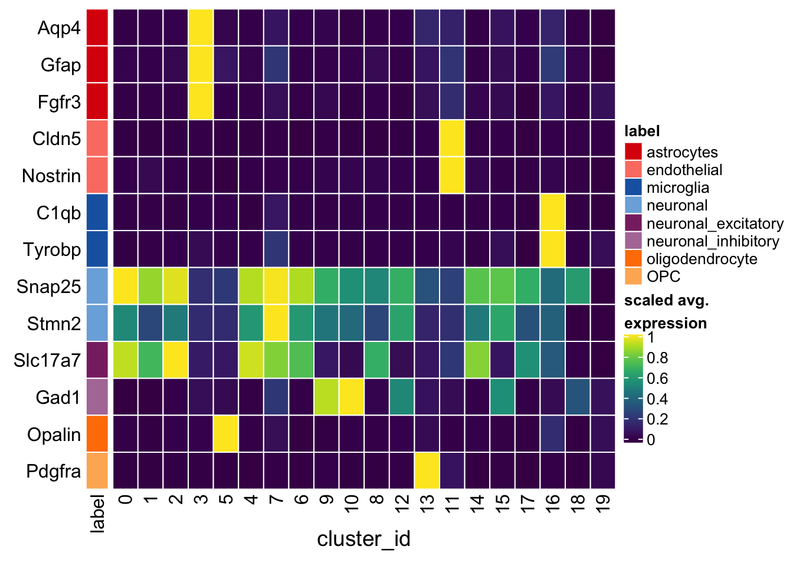

1-preprocessing
Pierre-Luc Germain
Institute for Molecular Life Sciences, University of Zurich, SwitzerlandHelena L. Crowell
Institute for Molecular Life Sciences, University of Zurich, Switzerland2019-10-23
Last updated: 2020-04-25
Checks: 7 0
Knit directory: LPS/
This reproducible R Markdown analysis was created with workflowr (version 1.5.0). The Checks tab describes the reproducibility checks that were applied when the results were created. The Past versions tab lists the development history.
Great! Since the R Markdown file has been committed to the Git repository, you know the exact version of the code that produced these results.
Great job! The global environment was empty. Objects defined in the global environment can affect the analysis in your R Markdown file in unknown ways. For reproduciblity it’s best to always run the code in an empty environment.
The command set.seed(20200425) was run prior to running the code in the R Markdown file. Setting a seed ensures that any results that rely on randomness, e.g. subsampling or permutations, are reproducible.
Great job! Recording the operating system, R version, and package versions is critical for reproducibility.
Nice! There were no cached chunks for this analysis, so you can be confident that you successfully produced the results during this run.
Great job! Using relative paths to the files within your workflowr project makes it easier to run your code on other machines.
Great! You are using Git for version control. Tracking code development and connecting the code version to the results is critical for reproducibility. The version displayed above was the version of the Git repository at the time these results were generated.
Note that you need to be careful to ensure that all relevant files for the analysis have been committed to Git prior to generating the results (you can use wflow_publish or wflow_git_commit). workflowr only checks the R Markdown file, but you know if there are other scripts or data files that it depends on. Below is the status of the Git repository when the results were generated:
Ignored files:
Ignored: .DS_Store
Ignored: .Rhistory
Ignored: .Rproj.user/
Ignored: LPS_old/output/
Ignored: LPS_old/temp/
Ignored: data/
Untracked files:
Untracked: .gitignore
Untracked: LPS/
Note that any generated files, e.g. HTML, png, CSS, etc., are not included in this status report because it is ok for generated content to have uncommitted changes.
These are the previous versions of the R Markdown and HTML files. If you’ve configured a remote Git repository (see ?wflow_git_remote), click on the hyperlinks in the table below to view them.
| File | Version | Author | Date | Message |
|---|---|---|---|---|
| Rmd | 83473d4 | fionarhuang | 2020-04-25 | remove LPS folder |
| html | 83473d4 | fionarhuang | 2020-04-25 | remove LPS folder |
| Rmd | f77a45b | fionarhuang | 2020-04-25 | upload analysis files of LPS |
| html | f77a45b | fionarhuang | 2020-04-25 | upload analysis files of LPS |
Introduction
This file combines files created by Pierre-Luc Germain and Helena L. Crowell:
Load packages
suppressPackageStartupMessages({
library(cowplot)
library(Seurat)
library(scater)
library(scds)
library(DropletUtils)
library(readxl)
library(SingleCellExperiment)
library(muscat)
library(Matrix)
library(dplyr)
library(ComplexHeatmap)
library(viridis)
library(ggplot2)
})# increase future's maximum allowed size of objects
# to be exported from default of 500 MB to 2 GB
options(future.globals.maxSize = 2048 * 1024 ^ 2)Doublet removal
# load raw counts
fastq_dirs <- list.dirs("data", recursive = FALSE, full.names = TRUE)
names(fastq_dirs) <- basename(fastq_dirs)
sce <- DropletUtils::read10xCounts(fastq_dirs)
# rename row/colData colnames & SCE dimnames
names(rowData(sce)) <- c("ENSEMBL", "SYMBOL")
names(colData(sce)) <- c("sample_id", "barcode")
sce$sample_id <- factor(basename(sce$sample_id))
dimnames(sce) <- list(
with(rowData(sce), paste(ENSEMBL, SYMBOL, sep = ".")),
with(colData(sce), paste(barcode, sample_id, sep = ".")))
# load metadata
md_dir <- file.path("data", "metadata.xlsx")
md <- readxl::read_excel(md_dir)
m <- match(sce$sample_id, md$`Sample ID`)
sce$group_id <- md$Characteristics[m]
# remove undetected genes
sce <- sce[Matrix::rowSums(counts(sce) > 0) > 0, ]
dim(sce)[1] 22963 30185Calculate QC Metrics
(mito <- grep("mt-", rownames(sce), value = TRUE)) [1] "ENSMUSG00000064341.mt-Nd1" "ENSMUSG00000064345.mt-Nd2"
[3] "ENSMUSG00000064351.mt-Co1" "ENSMUSG00000064354.mt-Co2"
[5] "ENSMUSG00000064356.mt-Atp8" "ENSMUSG00000064357.mt-Atp6"
[7] "ENSMUSG00000064358.mt-Co3" "ENSMUSG00000064360.mt-Nd3"
[9] "ENSMUSG00000065947.mt-Nd4l" "ENSMUSG00000064363.mt-Nd4"
[11] "ENSMUSG00000064367.mt-Nd5" "ENSMUSG00000064368.mt-Nd6"
[13] "ENSMUSG00000064370.mt-Cytb"sce <- calculateQCMetrics(sce, feature_controls = list(Mt = mito))Warning: 'calculateQCMetrics' is deprecated.
Use 'perCellQCMetrics' or 'perFeatureQCMetrics' instead.# plotHighestExprs(sce, n = 20)Filtering
# get sample-specific outliers
cols <- c("total_counts", "total_features_by_counts", "pct_counts_Mt")
log <- c(TRUE, TRUE, FALSE)
type <- c("both", "both", "higher")
drop_cols <- paste0(cols, "_drop")
for (i in seq_along(cols))
colData(sce)[[drop_cols[i]]] <- isOutlier(sce[[cols[i]]],
nmads = 2.5, type = type[i], log = log[i], batch = sce$sample_id)
sapply(drop_cols, function(i)
sapply(drop_cols, function(j)
sum(sce[[i]] & sce[[j]]))) total_counts_drop total_features_by_counts_drop
total_counts_drop 162 79
total_features_by_counts_drop 79 94
pct_counts_Mt_drop 38 31
pct_counts_Mt_drop
total_counts_drop 38
total_features_by_counts_drop 31
pct_counts_Mt_drop 3451cd <- data.frame(colData(sce))
ps <- lapply(seq_along(cols), function (i) {
p <- ggplot(cd, aes_string(x = cols[i], alpha = drop_cols[i])) +
geom_histogram(bins = 100, show.legend = FALSE) +
scale_alpha_manual(values = c("FALSE" = 1, "TRUE" = 0.4)) +
facet_wrap(~sample_id, ncol = 1, scales = "free") +
theme_classic() + theme(strip.background = element_blank())
if (log[i])
p <- p + scale_x_log10()
return(p)
})
plot_grid(plotlist = ps, ncol = 3)
layout(matrix(1:2, nrow = 1))
ol <- Matrix::rowSums(as.matrix(colData(sce)[drop_cols])) != 0
x <- sce$total_counts
y <- sce$total_features_by_counts
LSD::heatscatter(x, y, log="xy", main = "unfiltered",
xlab = "Total counts", ylab = "Non-zero features")
LSD::heatscatter(x[!ol], y[!ol], log="xy", main = "filtered",
xlab = "Total counts", ylab = "Non-zero features")
# summary of cells kept
ns <- table(sce$sample_id)
ns_fil <- table(sce$sample_id[!ol])
print(rbind(
unfiltered = ns, filtered = ns_fil,
"%" = ns_fil / ns * 100), digits = 0) LC016 LC017 LC019 LC020 LC022 LC023 LC025 LC026
unfiltered 4553 2420 2947 4430 3783 3529 3347 5176
filtered 4084 2124 2415 3547 3408 3264 3010 4755
% 90 88 82 80 90 92 90 92# drop outlier cells
sce <- sce[, !ol]
dim(sce)[1] 22963 26607# require count > 1 in at least 20 cells
sce <- sce[Matrix::rowSums(counts(sce) > 1) >= 20, ]
dim(sce)[1] 11309 26607saveRDS(sce, file.path("output", "MAGL-SCE.rds"))Integration
# create SeuratObject
so <- CreateSeuratObject(
counts = counts(sce),
meta.data = data.frame(colData(sce)),
project = "10xMAGL")
# split by sample
cells_by_sample <- split(colnames(sce), sce$sample_id)
so <- lapply(cells_by_sample, function(i)
SubsetData(so, cells = i))
# normalize, find variable genes, and scale
so <- lapply(so, NormalizeData, verbose = FALSE)
so <- lapply(so, FindVariableFeatures, nfeatures = 2e3,
selection.method = "vst", do.plot = FALSE, verbose = FALSE)
so <- lapply(so, ScaleData, verbose = FALSE)
# find anchors & integrate
as <- FindIntegrationAnchors(so, verbose = FALSE)so <- IntegrateData(anchorset = as, dims = seq_len(30), verbose = FALSE)
# scale integrated data
DefaultAssay(so) <- "integrated"
so <- ScaleData(so, display.progress = FALSE)Warning: The following arguments are not used: display.progressSuggested parameter: verbose instead of display.progressCentering and scaling data matrixDimension reduction
so <- RunPCA(so, npcs = 30, verbose = FALSE)
so <- RunTSNE(so, reduction = "pca", dims = seq_len(20),
seed.use = 1, do.fast = TRUE, verbose = FALSE)
so <- RunUMAP(so, reduction = "pca", dims = seq_len(20),
seed.use = 1, verbose = FALSE)Warning: The default method for RunUMAP has changed from calling Python UMAP via reticulate to the R-native UWOT using the cosine metric
To use Python UMAP via reticulate, set umap.method to 'umap-learn' and metric to 'correlation'
This message will be shown once per sessionClustering
so <- FindNeighbors(so, reduction = "pca", dims = seq_len(20), verbose = FALSE)
for (res in c(0.1, 0.2, 0.4, 0.8, 1, 1.2, 2))
so <- FindClusters(so, resolution = res, random.seed = 1, verbose = FALSE)DR colored by sample, group, and cluster ID
thm <- theme(aspect.ratio = 1, legend.position = "none")
ps <- lapply(c("sample_id", "group_id", "ident"), function(u) {
p1 <- DimPlot(so, reduction = "tsne", group.by = u) + thm
p2 <- DimPlot(so, reduction = "umap", group.by = u)
lgd <- get_legend(p2)
p2 <- p2 + thm
list(p1, p2, lgd)
plot_grid(p1, p2, lgd, nrow = 1,
rel_widths = c(1, 1, 0.5))
})
plot_grid(plotlist = ps, ncol = 1)
Heatmap on known markers
# set cluster IDs to resolution 0.1 clustering
so <- SetIdent(so, value = "integrated_snn_res.0.1")
unique(Idents(so)) [1] 9 3 14 1 13 17 0 12 4 10 15 7 6 8 2 11 18 5 16 19
Levels: 0 1 2 3 4 5 6 7 8 9 10 11 12 13 14 15 16 17 18 19DefaultAssay(so) <- "RNA"
so <- SetIdent(so, value = "integrated_snn_res.0.1")
sce <- as.SingleCellExperiment(so, assay = "RNA")
colData(sce) <- as.data.frame(colData(sce)) %>%
mutate_if(is.character, as.factor) %>%
DataFrame(row.names = colnames(sce))
sce$cluster_id <- Idents(so)
known_markers <- list(
astrocytes = c("Aqp4", "Gfap", "Fgfr3"),
endothelial = c("Cldn5","Nostrin"),
microglia = c("C1qb","Tyrobp"),
neuronal = c("Snap25", "Stmn2"),
neuronal_excitatory = "Slc17a7",
neuronal_inhibitory = "Gad1",
oligodendrocyte = "Opalin",
OPC = "Pdgfra")
known_markers <- lapply(known_markers, sapply, function(g)
grep(paste0(g, "$"), rownames(sce), value = TRUE))
gs <- gsub(".*\\.", "", unlist(known_markers))
ks <- rep.int(names(known_markers), vapply(known_markers, length, numeric(1)))
labs <- sprintf("%s(%s)", gs, ks)
# split cells by cluster
cs_by_k <- split(colnames(sce), sce$cluster_id)
# compute cluster-marker means
means_by_cluster <- lapply(known_markers, function(gs)
vapply(cs_by_k, function(i)
Matrix::rowMeans(logcounts(sce)[gs, i, drop = FALSE]),
numeric(length(gs))))
# prep. for plotting & scale b/w 0 and 1
mat <- do.call("rbind", means_by_cluster)
mat <- muscat:::.scale(mat)
rownames(mat) <- gs
cols <- muscat:::.cluster_colors[seq_along(known_markers)]
cols <- setNames(cols, names(known_markers))
row_anno <- rowAnnotation(
df = data.frame(label = ks),
col = list(label = cols),
gp = gpar(col = "white"))
Heatmap(mat,
name = "scaled avg.\nexpression",
col = viridis(10),
cluster_rows = FALSE,
cluster_columns = FALSE,
row_names_side = "left",
column_title = "cluster_id",
column_title_side = "bottom",
rect_gp = gpar(col = "white"),
left_annotation = row_anno)
Below reproduces the heatmap generated in here. The cluster ID is different due to the version of seurat.
Heatmap(mat,
name = "scaled avg.\nexpression",
col = viridis(10),
cluster_rows = FALSE,
column_order = c("0", "1", "2", "3", "5",
"4", "7", "6", "9", "10",
"8", "12", "13", "11", "14",
"15", "17", "16", "18", "19"),
row_names_side = "left",
column_title = "cluster_id",
column_title_side = "bottom",
rect_gp = gpar(col = "white"),
left_annotation = row_anno)
Annotation
# set cluster IDs to resolution 0.1 clustering
so <- SetIdent(so, value = "integrated_snn_res.0.1")
unique(Idents(so)) [1] 9 3 14 1 13 17 0 12 4 10 15 7 6 8 2 11 18 5 16 19
Levels: 0 1 2 3 4 5 6 7 8 9 10 11 12 13 14 15 16 17 18 19ao <- RenameIdents(so,
`3` = "Astrocytes",
`11` = "Endothelial",
`16` = "Microglia",
`5` = "Oligodendrocytes",
`13` = "OPC",
`0` = "Excit. Neuron",
`1` = "Excit. Neuron",
`2` = "Excit. Neuron",
`4` = "Excit. Neuron",
`6` = "Excit. Neuron",
`7` = "Excit. Neuron",
`8` = "Excit. Neuron",
`14` = "Excit. Neuron",
`17` = "Excit. Neuron",
`9` = "Inhib. Neuron",
`10` = "Inhib. Neuron",
`12` = "Inhib. Neuron",
`15` = "Inhib. Neuron",
`18` = "CPE cells",
`19` = "CPE cells")
ao@meta.data$cell_type <- Idents(ao) Save SeuratObject to .rds
saveRDS(as, file = "output/as.rds")
saveRDS(ao, file.path("output", "ao.rds"))
sessionInfo()R version 3.6.1 (2019-07-05)
Platform: x86_64-apple-darwin15.6.0 (64-bit)
Running under: macOS Mojave 10.14.4
Matrix products: default
BLAS: /Library/Frameworks/R.framework/Versions/3.6/Resources/lib/libRblas.0.dylib
LAPACK: /Library/Frameworks/R.framework/Versions/3.6/Resources/lib/libRlapack.dylib
locale:
[1] en_US.UTF-8/en_US.UTF-8/en_US.UTF-8/C/en_US.UTF-8/en_US.UTF-8
attached base packages:
[1] grid parallel stats4 stats graphics grDevices utils
[8] datasets methods base
other attached packages:
[1] viridis_0.5.1 viridisLite_0.3.0
[3] ComplexHeatmap_2.2.0 dplyr_0.8.5
[5] Matrix_1.2-17 muscat_1.0.0
[7] readxl_1.3.1 DropletUtils_1.6.1
[9] scds_1.2.0 scater_1.14.4
[11] ggplot2_3.3.0 SingleCellExperiment_1.8.0
[13] SummarizedExperiment_1.16.0 DelayedArray_0.12.0
[15] BiocParallel_1.20.0 matrixStats_0.55.0
[17] Biobase_2.46.0 GenomicRanges_1.38.0
[19] GenomeInfoDb_1.22.0 IRanges_2.20.0
[21] S4Vectors_0.24.0 BiocGenerics_0.32.0
[23] Seurat_3.1.1 cowplot_1.0.0
[25] workflowr_1.5.0
loaded via a namespace (and not attached):
[1] R.methodsS3_1.7.1 tidyr_1.0.2 acepack_1.4.1
[4] bit64_0.9-7 knitr_1.26 irlba_2.3.3
[7] R.utils_2.9.0 data.table_1.12.6 rpart_4.1-15
[10] RCurl_1.95-4.12 doParallel_1.0.15 metap_1.1
[13] RSQLite_2.1.2 RANN_2.6.1 future_1.15.0
[16] bit_1.1-14 httpuv_1.5.2 assertthat_0.2.1
[19] xfun_0.11 hms_0.5.2 evaluate_0.14
[22] promises_1.1.0 fansi_0.4.1 progress_1.2.2
[25] caTools_1.17.1.2 igraph_1.2.4.1 DBI_1.0.0
[28] geneplotter_1.64.0 htmlwidgets_1.5.1 purrr_0.3.3
[31] ellipsis_0.3.0 RSpectra_0.15-0 backports_1.1.6
[34] annotate_1.64.0 gbRd_0.4-11 RcppParallel_4.4.4
[37] vctrs_0.2.4 ROCR_1.0-7 withr_2.1.2
[40] checkmate_1.9.4 sctransform_0.2.0 prettyunits_1.1.1
[43] cluster_2.1.0 ape_5.3 lazyeval_0.2.2
[46] crayon_1.3.4 genefilter_1.68.0 labeling_0.3
[49] edgeR_3.28.0 pkgconfig_2.0.3 nlme_3.1-142
[52] vipor_0.4.5 blme_1.0-4 nnet_7.3-12
[55] rlang_0.4.5 globals_0.12.4 lifecycle_0.2.0
[58] rsvd_1.0.2 cellranger_1.1.0 rprojroot_1.3-2
[61] lmtest_0.9-37 Rhdf5lib_1.8.0 boot_1.3-23
[64] zoo_1.8-6 base64enc_0.1-3 beeswarm_0.2.3
[67] whisker_0.4 ggridges_0.5.1 GlobalOptions_0.1.1
[70] png_0.1-7 rjson_0.2.20 bitops_1.0-6
[73] R.oo_1.23.0 KernSmooth_2.23-15 pROC_1.15.3
[76] blob_1.2.0 DelayedMatrixStats_1.8.0 shape_1.4.4
[79] stringr_1.4.0 scales_1.1.0 memoise_1.1.0
[82] magrittr_1.5 plyr_1.8.5 ica_1.0-2
[85] gplots_3.0.1.1 bibtex_0.4.2 gdata_2.18.0
[88] zlibbioc_1.32.0 compiler_3.6.1 lsei_1.2-0
[91] dqrng_0.2.1 RColorBrewer_1.1-2 clue_0.3-57
[94] lme4_1.1-21 DESeq2_1.26.0 fitdistrplus_1.0-14
[97] cli_2.0.2 XVector_0.26.0 lmerTest_3.1-0
[100] listenv_0.7.0 pbapply_1.4-2 TMB_1.7.15
[103] htmlTable_1.13.2 Formula_1.2-3 MASS_7.3-51.4
[106] tidyselect_1.0.0 stringi_1.4.6 yaml_2.2.0
[109] BiocSingular_1.2.0 locfit_1.5-9.1 latticeExtra_0.6-28
[112] ggrepel_0.8.1 tools_3.6.1 future.apply_1.3.0
[115] circlize_0.4.8 rstudioapi_0.11 foreach_1.4.7
[118] foreign_0.8-71 git2r_0.26.1 gridExtra_2.3
[121] farver_2.0.3 Rtsne_0.15 digest_0.6.25
[124] Rcpp_1.0.4 SDMTools_1.1-221.1 later_1.0.0
[127] RcppAnnoy_0.0.14 httr_1.4.1 AnnotationDbi_1.48.0
[130] npsurv_0.4-0 Rdpack_0.11-0 colorspace_1.4-1
[133] XML_3.98-1.20 fs_1.3.1 reticulate_1.13
[136] LSD_4.0-0 splines_3.6.1 uwot_0.1.4
[139] xgboost_0.90.0.2 plotly_4.9.1 xtable_1.8-4
[142] jsonlite_1.6.1 nloptr_1.2.1 R6_2.4.1
[145] Hmisc_4.3-0 pillar_1.4.3 htmltools_0.4.0
[148] glue_1.4.0 minqa_1.2.4 BiocNeighbors_1.4.1
[151] codetools_0.2-16 tsne_0.1-3 lattice_0.20-38
[154] tibble_3.0.0 pbkrtest_0.4-7 numDeriv_2016.8-1.1
[157] ggbeeswarm_0.6.0 colorRamps_2.3 leiden_0.3.1
[160] gtools_3.8.1 survival_2.44-1.1 limma_3.42.0
[163] glmmTMB_0.2.3 rmarkdown_1.17 munsell_0.5.0
[166] GetoptLong_0.1.7 rhdf5_2.30.0 GenomeInfoDbData_1.2.2
[169] iterators_1.0.12 variancePartition_1.16.0 HDF5Array_1.14.0
[172] reshape2_1.4.3 gtable_0.3.0